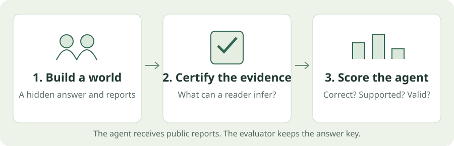
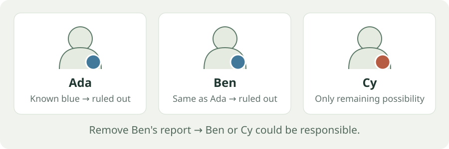

Test what the evidence actually supports.¶
Synthetic logic puzzles for studying reasoning, uncertainty and evidence sharing. Generate a case, check what can be inferred, and evaluate an agent without confusing a lucky guess with a supported answer.
From puzzle to score¶

- Build a case. Choose the useful evidence, irrelevant records and reliability rules.
- Certify it. Check which answers the evidence permits, including each agent's private view.
- Evaluate. Record correctness, evidential support, abstention and protocol failures separately.
Once installed, generation and saved-result replay work offline, without an API key or paid calls.
Choose a starting point¶
Make your first dataset¶
Generate, validate and export a small case in a few steps.
Read the experiments¶
See what happened when models received more evidence, less evidence or more output budget.
Understand the guarantees¶
Learn what a certificate establishes and why a correct answer can still lack support.
The latest finding¶
Extra irrelevant evidence did not consistently improve accuracy. The earlier pilot's apparent benefit did not repeat in the expanded follow-up.
Lite's primary score stayed at 10/12 between zero and 1,000 extra records. Four worlds stayed unchanged, one improved and one worsened. Flash remained at 12/12 in every condition.
Costs rose roughly 56× for Lite and 77× for Flash in the four-report setting, without higher endpoint accuracy. The sample is small, and the combined result is exploratory.
Read the findings, costs and limitations →
A puzzle you can solve now¶
Ada, Ben and Cy have red or blue badges. Badge values may repeat.
- The responsible person has a red badge.
- Ada's badge is blue.
- Ben's badge has the same value as Ada's.
Cy is the only possible responsible person. Ada and Ben are both ruled out.

Now remove the report about Ben. Both Ben and Cy become possible. An agent that guesses Cy may be correct, but its answer is no longer supported by the available evidence.
This is a teaching example, not a model measurement. See the formal clue rules, or download a generated public-only case.
An early research preview
Version 0.5.0rc2 is available as a prerelease. Licensing, ownership clearance and independent reviews remain pending. Public availability does not grant a redistribution license. See the open questions.
Software, schema and historical versions
- Software:
0.5.0rc2. - Current dataset schema:
clue-community-1. - Legacy flat data:
0.3.0.
Study IDs, source hashes and presentation IDs serve different purposes. The data dictionary explains these identities and the evaluator-only files.